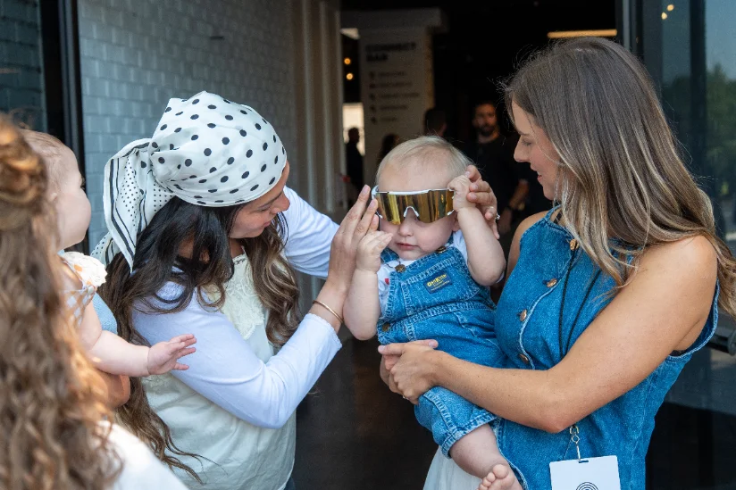
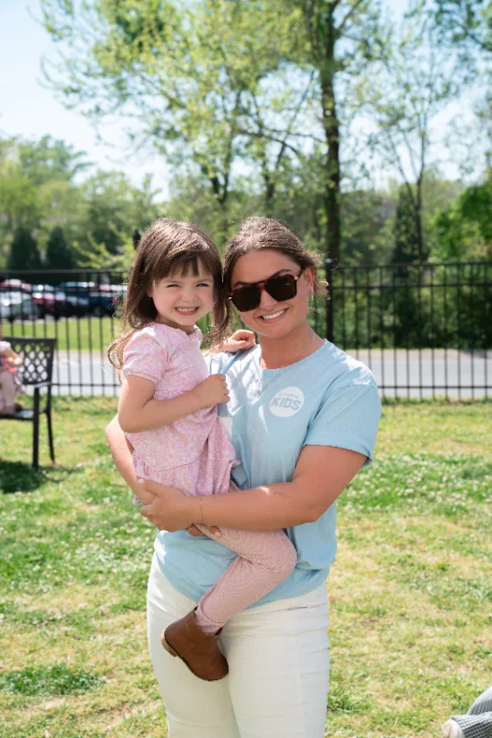
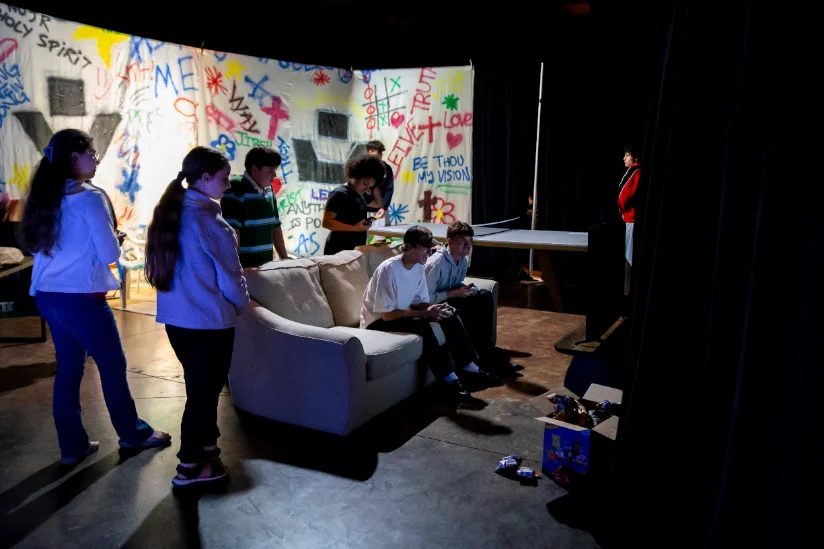
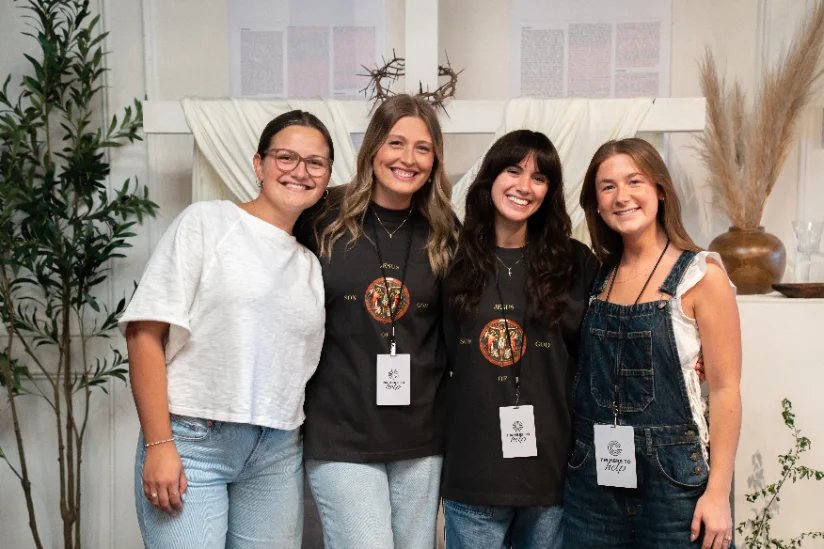
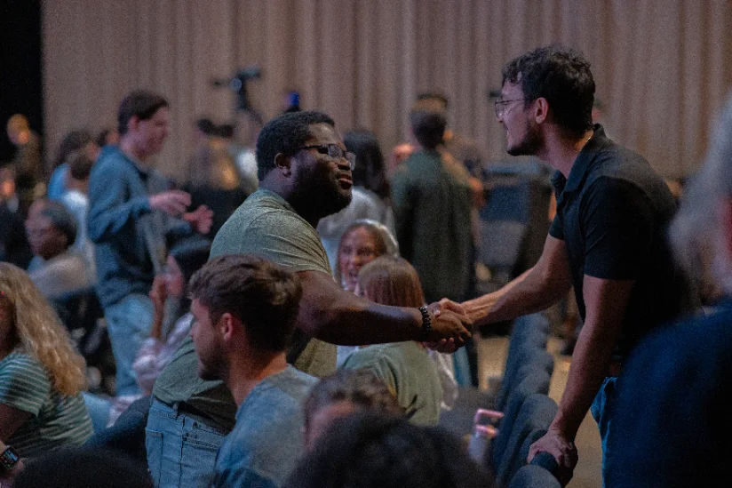
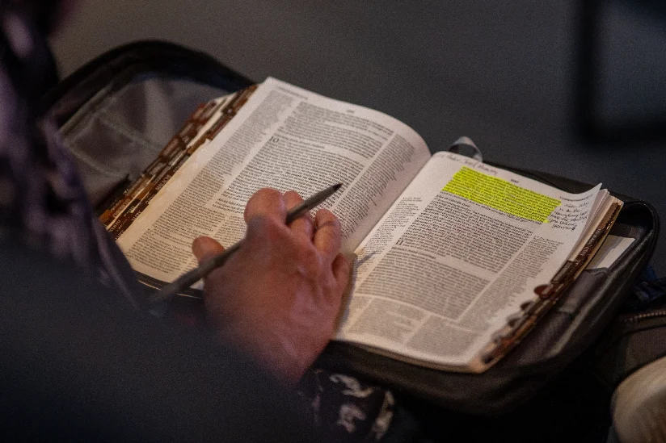

Communities
Wherever you are in life, there's a place for you at Citipointe.

Citipointe Kids
We don't believe in babysitting — we believe in raising world changers. There's no junior Holy Spirit: every Sunday, kids from birth through elementary encounter God at their level — safe, fun, and full of Jesus. Our trained and background-checked team helps kids discover God's love through age-appropriate worship, Bible teaching, and play. Check-in opens before every service and our team will walk your family through it on your first visit.

Moms & Tots
Looking for a welcoming community for you and your little one? Join us every Wednesday at Citipointe Church for Moms & Tots — a relaxed morning designed for connection, encouragement, and fun. It's for children from newborn through kindergarten age: the perfect place to meet other moms while your little ones play, learn, and make new friends in a safe and engaging environment. Whether you're a first-time mom or have a growing family, we'd love to welcome you.

Youth Society
Youth Society is the youth ministry of Citipointe — making noise for Jesus in our cities and nations. We're a movement of young people who represent Jesus wherever they go, helping high-schoolers discover the call of God on their lives. For students in 6th through 12th grade.

YA Society
Our Young Adults community is a place for anyone 18 to 30s who wants to grow in their faith, build genuine friendships, and live out God's purpose together. We gather to worship, dive into God's Word, have real conversations, and do life side by side. Whether you're new to church or have been following Jesus for years, you belong here. This is a community where faith is strengthened, leaders are raised, and lives are transformed.

Forged
A consistent space where the men of our church grow together in Christ, build lasting relationships, support one another through prayer and life, and pursue spiritual maturity and accountability. Expect fellowship, dinner, worship, and teaching. All men are welcome.

Salt & Light
Salt & Light is a community for the seasoned saints of our church to stay connected, grow in the Word, and enjoy genuine friendship in this season of life. Come for Bible study, stay for the fellowship. All are welcome.